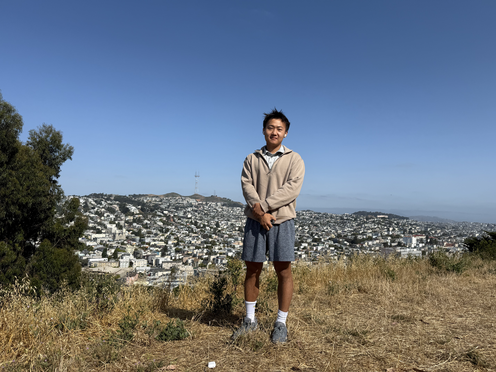

I am a Master's student in Computer Science at Duke University. I am fortunate to work with Professor Anru Zhang on AI for Health, where I explore how advanced AI methods—particularly large language models and generative models—can improve clinical data understanding and healthcare applications.
Motivated by the fundamental challenges underlying current AI systems—such as efficiency, reasoning reliability, and scalability observed in real-world applications—I actively study the foundations of artificial intelligence, including efficient AI agent workflows, scalable reasoning in large language models, and memory and context management. My long-term goal is to develop more efficient and principled AI systems that better support real-world applications.
Previously, I obtained my B.S. in Computer Science from the University of Rochester, where I worked with Professor Jiebo Luo on computer vision methods for biomedical image analysis.